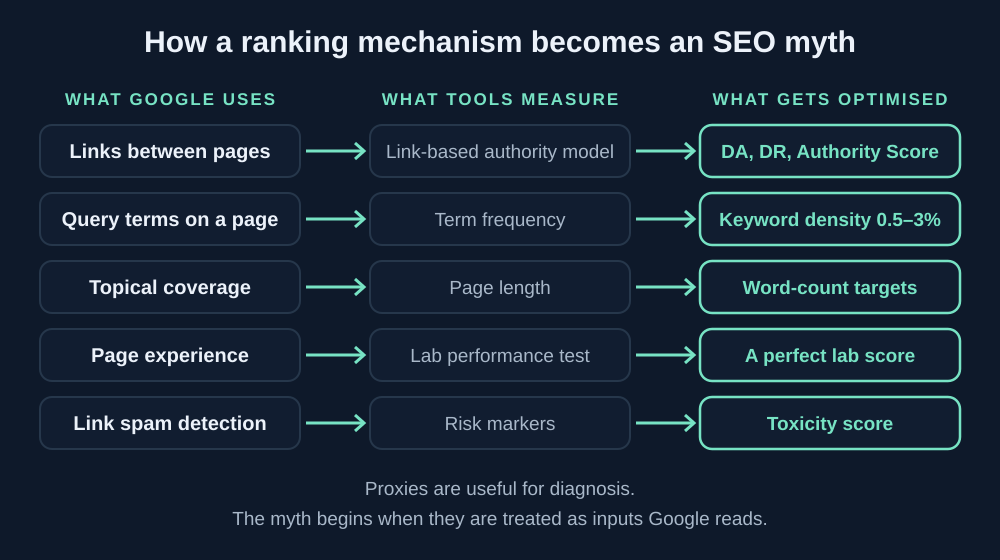
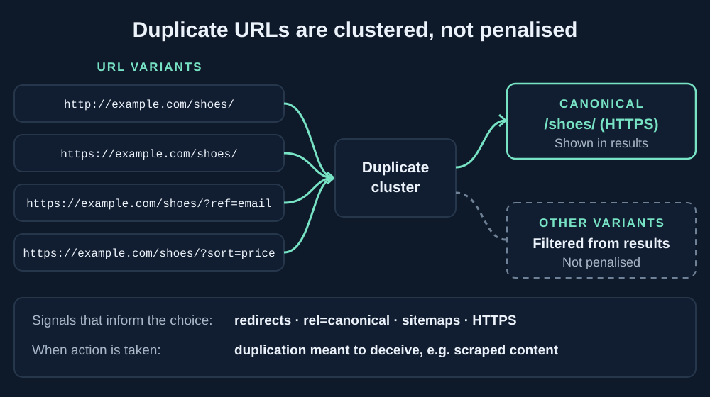
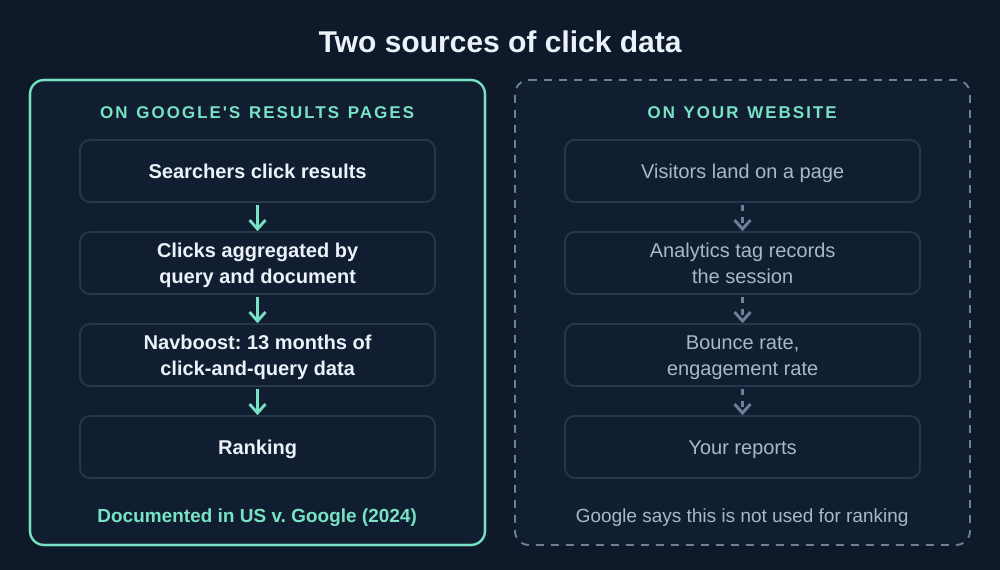

Key takeaways
- Most durable SEO myths are not invented. They start with a real ranking mechanism, become a measurable proxy inside a tool, and the proxy outlives the mechanism.
- Google does not use third-party authority scores, LSI keyword lists, keyword density targets or word counts. It does use links, site-wide signals, semantic matching and relevance—the things those proxies try to approximate.
- One myth hides a real signal. Google does not use Analytics bounce rate, but court records show that click-and-query data from its own results pages is a core ranking input.
- Duplicate content and spammy links are mostly filtered or ignored, not penalised, and AI-generated content is judged like any other content. Penalties exist, but they target deception and manipulation at scale.
Why SEO myths survive
SEO myths are usually treated as superstition. That is too generous to the people selling them and too harsh on the people who believe them. Most durable myths have a respectable origin. A search engine uses a real signal. Someone builds a measurable stand-in for it. A tool turns the stand-in into a score, a traffic light or a checklist item. Over time, the score is treated as the signal.
Links matter, so link-based authority scores appear. Query terms matter, so keyword density gets a green zone. Link spam exists, so a toxicity score flags it. Each proxy is useful for some job. The myth begins when the proxy is mistaken for the thing Google measures. Economists know the problem as Goodhart’s law: once a measure becomes a target, it stops being a good measure.

Figure 1. How a ranking mechanism turns into a myth. The proxies are useful for diagnosis. The myth starts when they are treated as inputs Google reads.
A second reason is that Google rarely says how much a signal matters. It says what it does not use more often than what it does. That leaves room for confident vendors and for correlation studies that cannot separate cause from coincidence. And when a Google denial turns out to be incomplete, as it did with click data, every other denial loses credibility, including the accurate ones. The same pattern is now repeating in generative search, where established SEO work is being sold under a new name.
The ten myths below survive among experienced practitioners because each contains a fact that keeps it alive. The question for each is the same: what does the evidence show, and what kind of evidence is it?
1. “Google uses Domain Authority”
Domain Authority is Moz’s score. Moz defines it as a ranking score that predicts how well a website will rank, on a scale of one to 100. [4] Ahrefs’ Domain Rating and Semrush’s Authority Score do similar jobs with different data. None of them is a Google signal. Gary Illyes has said Google doesn’t really have “overall domain authority”, and John Mueller has said Google doesn’t use domain authority at all in its algorithms. [5]
The myth survives because the scores correlate with rankings. Backlinko’s study of 11.8 million results, run on Ahrefs data, found that Domain Rating correlated with higher first-page positions. [6] A score built from link data to predict rankings will correlate with rankings. That shows the model works. It does not show that Google reads the number.
The opposite claim, that Google judges only pages and never sites, is also wrong. Google’s ranking systems guide says site-wide signals and classifiers are used and contribute to its understanding of pages. [3] The 2024 Content Warehouse leak showed that Google can calculate a siteAuthority score as part of the quality signals it stores for documents. The leaked documentation says little about which attributes are used or how much they weigh, and Google cautioned against inaccurate assumptions drawn from it. [7]
The defensible position sits between the two. Google has site-level signals; it does not use Moz’s, Ahrefs’ or Semrush’s version of them. A third-party authority score is a reasonable way to compare link profiles and a poor KPI, because it can rise while rankings stay flat.
2. “LSI keywords help Google understand your page”
Latent semantic indexing is real. Deerwester and colleagues described it in 1990 as a way to retrieve documents that share meaning without sharing exact terms. It applied singular-value decomposition to a term-document matrix and was tested on collections of 1,033 and 1,460 documents. [8] It is not what Google uses, and “LSI keywords” is not a term from that research. Mueller’s answer in 2019 was blunt: there is no such thing as LSI keywords. [9]
What Google does describe are systems built for the problem LSI tried to solve. Its ranking systems guide lists BERT, neural matching and RankBrain, which help it understand how words relate to concepts and what a query means. [3] These are learned language models. They do not check a page against a list of related terms generated by a keyword tool.
The useful part of the myth is topical coverage. A page about refinancing a mortgage that never mentions rates, terms or closing costs is probably a weak page. Related-term lists remind writers of that. The mistake is treating the list as a ranking input and inserting terms that a good explanation would not need.
3. “There is an ideal keyword density”
Matt Cutts, then head of Google’s webspam team, answered this in 2011. The first one or two mentions of a word can help Google understand what a page is about. After that, returns diminish, and there is no ideal percentage. [10] Google’s spam policies still define keyword stuffing as a violation, and its SEO Starter Guide describes excessive repetition as tiring for users. [1][11]
The myth survives because a popular WordPress plugin puts a traffic light on it. Yoast’s free plugin shows a green result when keyphrase density is between 0.5% and 3%. [12] Yoast presents the check as a way to stay on topic and avoid stuffing, a reasonable editorial aid. But a green light inside the CMS is easy to read as a ranking requirement, especially for writers who never see the reasoning behind it.
The real mechanism is term matching. A relevant page still needs the words of a query, or close equivalents. Beyond that, repetition adds little. Density measures a by-product of writing about a topic, not the thing that makes a page rank.
4. “Longer content ranks better”
Word-count advice usually comes from correlation studies. Backlinko found an average first-page result of 1,447 words. The same study found word count evenly distributed across the top ten, and it states that, as a correlation study, it cannot determine why. [6] Google is unusually direct on this point. Its guidance says it has no preferred word count, and the Starter Guide says the length of content alone doesn’t matter for ranking. [1][2]
Long pages often do rank, for reasons other than length. They tend to cover more subtopics, so they match more queries. They attract more links. Word count captures all of that and none of it. Backlinko found a clear correlation between rankings and Clearscope’s Content Grade, a measure of topical coverage. [6] That is also correlation, but it points in a more sensible direction.
Word-count targets produce a familiar failure: padding. A 2,500-word brief for a query that needs a 300-word answer forces writers to add introductions, definitions and repetition. The page gets worse for the reader and no better for the system the brief was written for.
5. “Duplicate content triggers a penalty”
Google addressed this in 2008. Susan Moskwa wrote that there is no duplicate content penalty in the way most people mean it. Google tries to filter duplicate documents and choose one version to show. Action is reserved for duplication intended to deceive, such as scraping other sites and republishing their content. [13] The current Starter Guide says content accessible under multiple URLs is fine. [1]
What actually happens is canonicalisation. Google groups duplicate URLs, picks the version it considers best for users, and shows that one. Redirects, rel=canonical annotations, sitemaps and HTTPS all inform the choice. [14] Separate deduplication systems avoid showing several near-identical results for one query. [3]

Figure 2. Duplicate URLs are clustered and one canonical version is shown. Google’s documentation reserves action for duplication meant to deceive. Sources: [13][14].
The myth persists because duplication causes real problems that look like penalties. Google may choose a different canonical than the one a site intended. Links and other signals can be split across variants. On large sites, parameter URLs and faceted navigation can spend crawling on copies. These problems are common in audits and migrations, and they can be expensive. They are technical failures, not punishments. The fix is consolidation, not rewriting copy to make it “unique”.
6. “E-E-A-T is a ranking factor”
E-E-A-T stands for experience, expertise, authoritativeness and trust. It comes from Google’s Search Quality Rater Guidelines, the manual for external raters who evaluate search results. Google says rater data is not used directly in its ranking algorithms; it helps Google check whether its systems work. [2] Google also says E-E-A-T itself isn’t a specific ranking factor, though a mix of factors that can identify content with good E-E-A-T is useful. Asked directly, the Starter Guide answers: “No, it’s not.” [1][2]
The second half of that statement is why the debate never ends. Google wants to rank content that shows experience and trust, and it looks for signals that correlate with those qualities. E-E-A-T describes a target, not a measurement. There is no E-E-A-T score to raise.
The damage comes from treating it as a checklist. Author boxes, credential pages and “reviewed by” labels get added to thin pages to satisfy a supposed factor. Where those elements reflect real expertise, they help readers judge the content. Where they are decoration, they change nothing a ranking system could plausibly use. Google calls trust the most important part of the concept. [2] Trust comes from accuracy, sourcing and reputation, not from a template.
7. “Bounce rate is a ranking factor”
This myth has a mirror image, and the mirror is the more dangerous one.
The myth itself is that Google uses Analytics bounce rate. Google has denied it for years. In 2017, Illyes said Google doesn’t use anything from Google Analytics in its algorithm. [15] The denial is plausible. Many sites do not run Google Analytics, the data is easy to manipulate, and a quick exit can mean the user found the answer.
The mirror image is the belief that Google ignores user behaviour altogether. That is false. Google’s How Search Works pages say it uses aggregated and anonymised interaction data to assess whether results are relevant. [16] The 2024 ruling in United States v. Google went further. Judge Mehta described Navboost as a signal that pairs queries and documents by memorising user click data. Google trained it on 18 months of user data before 2017 and on 13 months since. The court found that user data is a critical input at every stage of the search process. [17]

Figure 3. Two different sources of click data. The court record describes Google using click-and-query data from its own results pages. Google says it does not use Google Analytics data for ranking. Sources: [15][16][17].
The distinction is between two datasets. Bounce rate is measured on a website, by its analytics tag, using definitions the analytics vendor sets. Navboost-style data is measured on Google’s results pages, across all searchers, and aggregated by query and document. No site can see that second dataset. A site influences it the slow way: by earning the click with an accurate title and snippet, and by answering the query once the click arrives.
8. “Core Web Vitals are a major ranking factor”
Google confirms that Core Web Vitals are used by its ranking systems. The same documentation says there is no single page experience signal, that good scores in Search Console or third-party tools don’t guarantee top rankings, and that Google always seeks to show the most relevant content, even when page experience is sub-par. [18] When Google announced the page experience update in 2020, it said it would prioritise pages with the best information overall and that page experience becomes much more important when several pages have similar content. [19]
That describes a modest signal that matters most when relevance is close. The independent evidence is thin. Backlinko found no correlation between page speed and first-page rankings, but its speed data came from Alexa, a third-party source, which makes it a weak test. [6] The same limit appears in AI search: in the citation research reviewed in the SEO vs GEO case study, page speed did not explain differences in AI citations between pages on the same site.
The myth cuts both ways: passing Core Web Vitals will lift rankings, or speed does not matter. Neither is right. Speed affects users, and that is reason enough to work on it. The ranking effect, as Google describes it, is smaller than the attention it gets. The common waste is chasing a perfect score in a testing tool after real-user metrics already pass.
9. “Google penalises AI-generated content”
Google’s position has been stable since February 2023. It focuses on the quality of content rather than how it is produced, and appropriate use of AI or automation is not against its guidelines. Using automation, including AI, to generate content primarily to manipulate rankings is spam. [20] In March 2024, Google sharpened that into a scaled content abuse policy that covers mass-produced pages whether automation, humans or both are involved. [11][21] Google said the March 2024 changes, together with earlier work, reduced low-quality, unoriginal content in results by 45%. [21]
The main independent evidence comes from Ahrefs. It took the top 20 results for 100,000 keywords, about 600,000 pages, and ran them through its own AI detector. It classified 4.6% of ranking pages as pure AI and found a correlation of 0.011 between AI share and ranking position. [22] The study has clear limits. AI detectors are imperfect, the sample contains only pages that already rank, and Ahrefs sells AI content tools. The study is consistent with Google’s statements. It does not prove them.
The myth survives because AI made mass publishing cheap, and mass publishing is what the scaled content policy targets. When such sites lose traffic, AI gets the blame. The policy is aimed at a business model: producing many pages to capture search demand cheaply. AI made that model cheaper. It did not invent it.
10. “Toxic backlinks must be disavowed”
Google’s disavow documentation calls the tool an advanced feature that can harm a site’s performance if used incorrectly. It says that in most cases Google can assess which links to trust without help. Disavowing is warranted only when a site has a considerable number of spammy, artificial or low-quality links and those links have caused, or likely will cause, a manual action. [23]
That guidance follows from how Google has treated link spam since 2016. When Penguin became part of the core algorithm, Google said it would devalue spam by adjusting rankings based on spam signals, rather than affecting the ranking of the whole site. [24] In 2022, Google said SpamBrain could detect sites buying links and sites passing them, and that credit from unnatural links would be lost as those links were neutralised. [25] Ignoring a bad link is not the same as penalising the site it points to.
The “toxic” vocabulary comes from tools. Semrush’s Backlink Audit calculates an overall toxicity score from a set of risk markers and recalculates it when the user confirms a disavow. [26] That turns an audit heuristic into a number to manage. A site with no manual action and no history of link schemes gains nothing visible from disavowing junk links it never built, and it can lose value by disavowing links that were helping. The tool still has a real use: cleaning up after paid or manipulative link building.
The pattern behind the myths
The verdicts are deliberately uneven. Some myths are false. Others exaggerate something real, and calling them false would be its own error.
| Myth | What the evidence supports | Verdict |
|---|---|---|
| Google uses Domain Authority | Google uses site-wide signals, not third-party scores | False |
| LSI keywords | Google uses learned semantic models | False |
| Ideal keyword density | Query terms matter; repetition has diminishing returns | False |
| Longer content ranks better | Coverage and links correlate; length alone does not | False |
| Duplicate content penalty | Duplicates are filtered; deceptive copying can be penalised | Mostly false |
| E‑E‑A‑T is a ranking factor | Google uses signals that correlate with E‑E‑A‑T | Misleading |
| Bounce rate is a ranking factor | Analytics data is not used; search click data is | Half true |
| Core Web Vitals are a major factor | Used, mainly when relevance is similar | Overstated |
| AI content is penalised | Scaled low-value content is targeted, however made | False |
| Toxic links must be disavowed | Spam links are mostly ignored; disavow is for manual actions | Mostly false |
The evidence is uneven too. Google’s documentation is reliable about what Google does not use, and vague about how much the rest matters. Court records, built on sworn testimony and internal documents, are the strongest source on Google’s internals, but they cover only what the case needed. Correlation studies can describe what ranks. They cannot say why. Vendor studies add a further problem when the vendor sells the metric or tool being tested.
Conclusion
The ten myths share one structure. Each starts with something Google does: it uses links, matches terms, filters duplicates, weighs page experience, learns from clicks and fights spam. Each then attaches to a number that is easier to see than the mechanism: an authority score, a density percentage, a word count, a performance grade, a bounce rate, a toxicity score. The number gets optimised, reported and sold. The mechanism stays where it was.
That is why debunking rarely works on its own. Telling a writer that Google doesn’t use keyword density leaves them with nothing to check instead. The more durable test is to name the mechanism first, then ask whether a metric measures it or only correlates with it, and what kind of evidence connects the two. Myths that won’t die are usually living on the weakest kind.
Sources
[1] Google Search Central. SEO Starter Guide. Last updated December 10, 2025. https://developers.google.com/search/docs/fundamentals/seo-starter-guide
[2] Google Search Central. Creating Helpful, Reliable, People-First Content. Last updated October 5, 2026. https://developers.google.com/search/docs/fundamentals/creating-helpful-content
[3] Google Search Central. A Guide to Google Search Ranking Systems. Last updated December 10, 2025. https://developers.google.com/search/docs/appearance/ranking-systems-guide
[4] Schwartz, B. (2019). Moz Upgrades Controversial ‘Domain Authority’ Metric. Search Engine Land, February 5, 2019. https://searchengineland.com/moz-upgrades-controversial-domain-authority-metric-311609
[5] Hines, K. (2023). Domain Authority: Is It a Google Ranking Factor? Search Engine Journal, January 10, 2023. Compiles public statements by Gary Illyes (2016) and John Mueller (2020). https://www.searchenginejournal.com/ranking-factors/domain-authority/
[6] Dean, B. We Analyzed 11.8 Million Google Search Results. Backlinko, with data from Ahrefs. First published 2016; last updated April 14, 2025. Correlation study. https://backlinko.com/search-engine-ranking
[7] Claburn, T. (2024). Google’s In-House Docs About Search Ranking Leak Online, Sparking SEO Frenzy. The Register, May 29, 2024. https://www.theregister.com/2024/05/29/internal_google_search_documents/
[8] Deerwester, S., Dumais, S. T., Furnas, G. W., Landauer, T. K. & Harshman, R. (1990). Indexing by Latent Semantic Analysis. Journal of the American Society for Information Science, 41(6), 391–407. https://doi.org/10.1002/(SICI)1097-4571(199009)41:6%3C391::AID-ASI1%3E3.0.CO;2-9
[9] Schwartz, B. (2019). Google: There Is No Such Thing As LSI Keywords. Search Engine Roundtable, July 31, 2019. Reports John Mueller’s post of July 30, 2019. https://www.seroundtable.com/google-lsi-keywords-27970.html
[10] Cutts, M. (2011). What Is the Ideal Keyword Density of a Page? Google Search Central (video). https://www.youtube.com/watch?v=Rk4qgQdp2UA
[11] Google Search Central. Spam Policies for Google Web Search. Last updated August 28, 2026. https://developers.google.com/search/docs/essentials/spam-policies
[12] Yoast. Keyphrase Density Check. Yoast SEO feature documentation. https://yoast.com/features/keyphrase-density/
[13] Moskwa, S. (2008). Demystifying the “Duplicate Content Penalty”. Google Search Central Blog, September 12, 2008. https://developers.google.com/search/blog/2008/09/demystifying-duplicate-content-penalty
[14] Google Search Central. Consolidate Duplicate URLs. Last updated July 10, 2026. https://developers.google.com/search/docs/crawling-indexing/consolidate-duplicate-urls
[15] Schwartz, B. (2017). Google: Search Algorithm Does Not Look At Google Analytics Data. Search Engine Roundtable, June 28, 2017. Reports Gary Illyes’ post of June 26, 2017. https://www.seroundtable.com/google-algorithm-google-analytics-data-24065.html
[16] Google. How Search Works: Ranking Results. https://www.google.com/search/howsearchworks/how-search-works/ranking-results/
[17] United States v. Google LLC, Nos. 20-cv-3010 and 20-cv-3715 (APM), Memorandum Opinion (D.D.C. August 5, 2024). https://caselaw.findlaw.com/court/us-dis-crt-dis-col/116454429.html
[18] Google Search Central. Understanding Page Experience in Google Search Results. Last updated September 22, 2026. https://developers.google.com/search/docs/appearance/page-experience
[19] Subramanian, S. (2020). Evaluating Page Experience for a Better Web. Google Search Central Blog, May 28, 2020. https://developers.google.com/search/blog/2020/05/evaluating-page-experience
[20] Sullivan, D. & Nelson, C. (2023). Google Search’s Guidance About AI-Generated Content. Google Search Central Blog, February 8, 2023. https://developers.google.com/search/blog/2023/02/google-search-and-ai-content
[21] Tucker, E. (2024). New Ways We’re Tackling Spammy, Low-Quality Content on Search. Google, March 5, 2024; updated April 26, 2024. https://blog.google/products/search/google-search-update-march-2024/
[22] Ong, S. Q. & Guan, X. (2025). AI-Generated Content Does Not Hurt Your Google Rankings (600,000 Pages Analyzed). Ahrefs, July 2025. Vendor study. https://ahrefs.com/blog/ai-generated-content-does-not-hurt-your-google-rankings/
[23] Google Search Console Help. Disavow Links to Your Site. https://support.google.com/webmasters/answer/2648487
[24] Illyes, G. (2016). Penguin Is Now Part of Our Core Algorithm. Google Search Central Blog, September 23, 2016. https://developers.google.com/search/blog/2016/09/penguin-is-now-part-of-our-core
[25] Nguyen, D., Akhmedyanov, I., Scott, J. N. & Elangovan, K. (2022). December 2022 Link Spam Update Releasing for Google Search. Google Search Central Blog, December 14, 2022. https://developers.google.com/search/blog/2022/12/december-22-link-spam-update
[26] Semrush Knowledge Base. Backlink Audit Overview. https://www.semrush.com/kb/1090-backlink-audit-overview